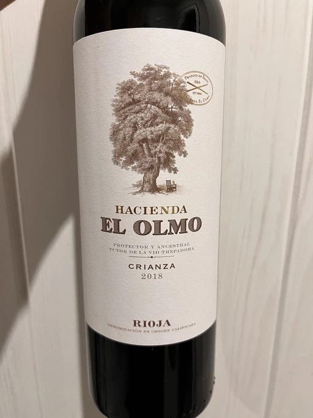

- Type
- Red Still, Dry
- Producer
- Bodegas la Eralta
- Vintage
- 2018
- Location
- Spain, Rioja DOC
- Grapes
- Tempranillo
- Alcohol
- 13.5
- Sugar
- NA
- Price
- 345 UAH
- Cellar
- 1 bottle
Ratings
2022-12-06 - 7.40
Easy drink. Arguably the best of the range. It has some oak influence, but the fruit is still the main protagonist here. It offers a typical nose, good balance and good tannin.